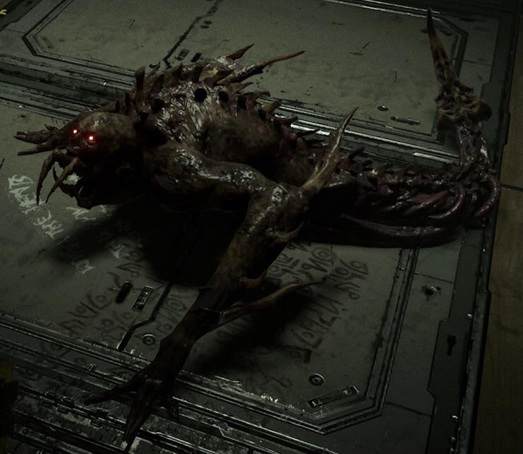

As i had previously listed before, im a gamer. I play a variety of games, some you may or may not have heard about. To start off, the first game i typically play is Minecraft. I dont play survival mode That often because i mainly play the servers or i play in creative. Im a story teller and thats pretty easy to do in Minecraft if you know what your doing. theres this youtuber i watch called "Rexiipher" . He does alot of Minecraft roleplays.
the next game i sometimes play is Roblox - Pressure. Roblox is a community game where people can develop their own projects and post them on Roblox for people to play. my favorite is Pressure. The game features a vast number of randomly generated rooms and sub-areas, with small variations to make each playthrough feel unique and prevent monotony. The game is a difficult endurance test, with many one-hit kills from monsters and hazards, and a complete reset to the beginning of the game upon death. There is over 15 different monsters across Pressures different gameodes, or also known as "expeditions". Nearly every monster does something different to try to kill the player(s). Out of all the games iv played in and out of Roblox, Pressure has to be one of my favorites.
Dead space is right up there with Pressure. I can proudly say i have played and beaten every main game in the Dead space franchise. The Game perfectly encapsulates the meaning of horror,
with a combination of some claustrophobia, cosmic horror, madness and insignificance, and visceral body horror. the player has to navigate an ever so hostile enviroment. In Dead space, you are never in control.
In dead space, the monsters you face are cleverly named,

Remember, these things were once humans onboard a mining ship.